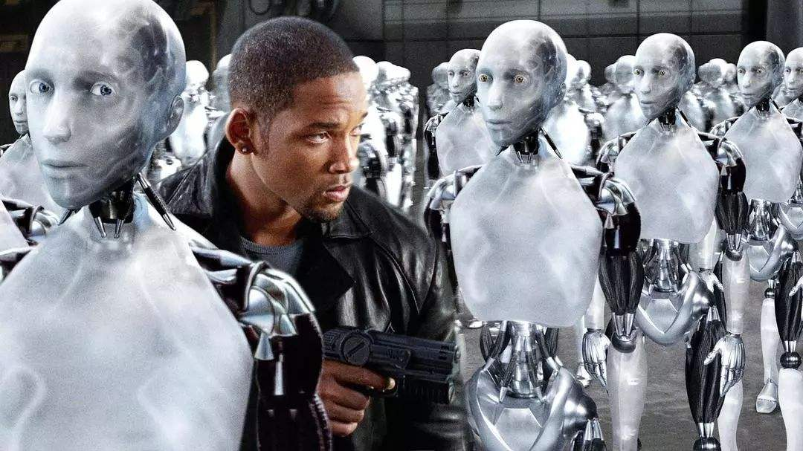
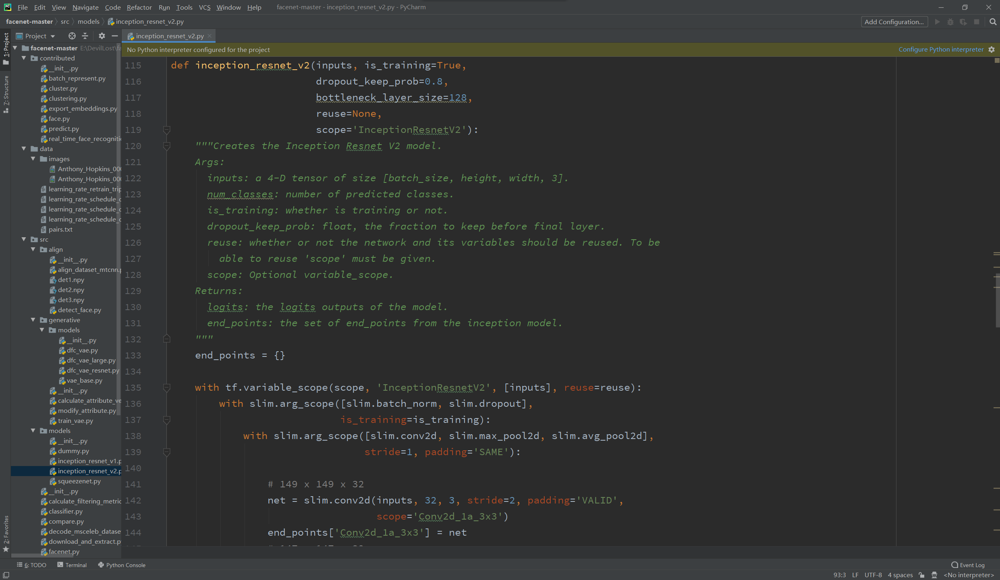

真正认识一下
人工智能？
说到人工智能，你们脑海中会不会浮现如下画面？
或者这种？
以及各种人工智能奴役、毁灭人类的画面？
从客观角度来说，这些科幻作品中的人工智能，的确是人工智能，但属于强人工智能。而我们身边的人工智能更多的是局限于某一领域解决方案的弱人工智能，比如说这个：
再硬核一点的人工智能原型，就比如说这个：
那么人工智能到底是什么呢？
人工智能，是研究、开发用于模拟、延伸和扩展人的智能的理论、方法、技术及应用系统的一门学科。
人工智能的研究领域包括机器人学、语音识别、图像识别、自然语言处理、专家系统等。
但我们常见的siri、x音推荐系统、x宝推荐系统、人脸识别门禁系统等都是人工智能的应用。
人工智能是个研究范围极其巨大的学科，最常见的研究和应用方向是机器学习、深度学习和强化学习，接下来我就用通俗的话简单介绍一下最基本的机器学习。
机器学习是一门研究计算机怎样模拟或实现人类的学习行为，以获取新的知识或技能，重新组织已有的知识结构使之不断改善自身的性能的学科。
因此机器学习是人工智能的核心，是使计算机具有智能的根本途径。机器学习也是上述三大方向中范围最大的一个方向，甚至包含了深度学习。
常见机器学习算法有：KNN(K近邻)算法、朴素贝叶斯算法、SVM(支持向量机)算法、线性回归、逻辑斯特回归、随机森林、深度学习等算法。
为了让大家都能看得懂，我选择一个最容易解释的KNN算法来做详细科普(仅仅只有初中数学难度！！！)。
KNN，K-NearestNeighbor，译作K近邻。举例如下：
假设我们现在面前有一个电影的大数据集，取样结构如下：
从我们人类的认知角度来看，如果一部电影的打斗镜头只有1个，而kiss镜头有101个，那么多半这是一部爱情片，同样的，如果一部电影打斗镜头有108个，而kiss镜头只有5个，那么多半这是一部动作片。
OK，这样就建立起了一套简单的电影二分类方法，也就是说你不用告诉我这部电影是什么名字、什么内容、什么类型，你只需要告诉我kiss镜头数和打斗镜头数，我就能简单地判断是爱情片还是动作片。这就是人类的认知体系(我这个例子是十分简化的，人类的认知体系只会复杂得令人头秃)。
而人工智能机器学习的K近邻算法也能够做到这一点，那么它是怎么做到的呢？
K近邻是选取距离需要预测的数据最近的K个数据，通过提取K个数据的标签进行分析，来判断需要预测的数据是属于哪个分类的。
刚刚的数据集中我们可以看到，每部电影的最后都明确标注了电影类型，这个电影类型就是这个数据集中的标签集。标签集就相当于是数据标识。
接下来，我们先构建一个平面直角坐标系。什么？你忘记平面直角坐标系是啥了？？？抱歉这是初中内容，我拒绝回答(手动滑稽)。
然后将打斗镜头数及kiss镜头数作为横纵坐标轴，将数据集中的数据当作是二维坐标点，在坐标系中标出，图如下：
基于这个坐标系，我们很容易就能够看出，以直线y=x作为中间的分界线，直线y=x以上的区域，是属于爱情片，y=x以下的区域，是属于动作片，但是K近邻可没有眼睛，他是怎么知道的呢？它是通过距离来判断的，正如K近邻这个名字，取最近的K个数据。
在平面直角坐标系中，两点间距离公式大家还记得么？这是初中内容！！！忘记的。。。我也不知道该说啥了，取点A坐标为(x1, y1)，取点B坐标为(x2, y2)，公式如下：
上图中我们有一未知电影类型的点(101, 20)，我们怎么用K近邻算法来判断这是一部什么电影呢？
我们先计算出这个点到所有已知类型点的距离，可以得出从左到右距离分别为(精确到小数点后两位)：128.69、118.22、16.55、18.44，我们再令K=3，也就是说取最近的3个点，也就是上图中靠右边的三个点，我们可以通过查询上表中的标签，发现三个点中有两个点是动作片，一个点是爱情片，那么我们分析的结果为：这个未知的电影是动作片。
OK，这就是人工智能机器学习中最常用的K近邻算法，如果你看得懂的话，恭喜你！！！成功学会了一个人工智能的算法嘿嘿嘿！！！